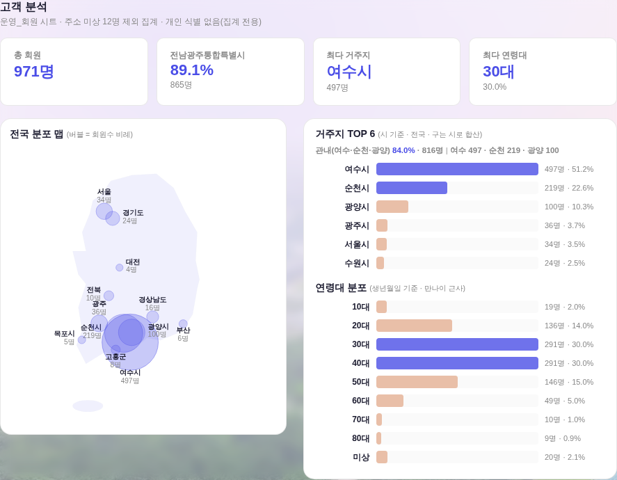
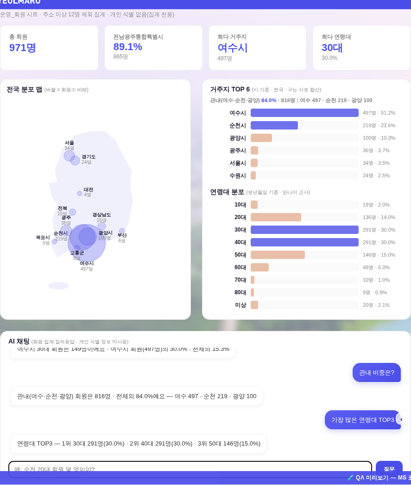

지시(운영자): ① 전국 분포 맵 흰 박스 높이를 오른쪽(거주지·연령 카드)과 일치 ② 고객 분석 아래에 AI 채팅 — 「어떤 고객이 00명 있어?」에 답하게.
스크린샷 = QA 진입로(?qa=admin) + 합성 회원 분포(주소1·주소2·연령대만, PII 0) 주입 — 실데이터·실API 미접촉.



| 전 | 후 | |
|---|---|---|
| 좌(맵)·우 카드 하단선 차 | Δ64.7px (좌 763.6 / 우 828.3) | Δ0 (둘 다 828.3) |
| 채팅 응답 검증(목데이터 여수 497명·30대 30%) | — | 「여수 30대」= 149명(30.0%·전체 15.3%) ✓ · 「관내 비중」= 816명(84.0%) ✓ · 「연령대 TOP3」 ✓ |
| 게이트 | check_design 1605/1605(신규 hex 0) · check_refs ✓ · smoke_layout PASS(1920×1080·1600×900) · smoke_login PASS · 인라인 JS 문법 전 블록 ✓ | |
align-items:flex-start → stretch + 맵 카드 flex column화(svg는 늘어난 칸 세로 중앙) — _memOvRender, 모달·4면 인라인 공용..cb-body/.cb-msg/.cb-chip — 기틀 §2 #11) + 회원 조회 입력·accent 버튼 결 계승. 신규 색·클래스·raw hex 0._memAiLocal) — 지역(시·시도)·연령대·관내·TOP·총원 질문을 화면 집계와 같은 기준으로 즉답(비용 0·오차 0) ② 정형 밖 자유 질문 = /api/mem-chat(Worker llmText, 집계 JSON만 전송 = 개인 식별 0) — 미배포/키 없음이면 안내 폴백(예울이 /api/qa 선례). ⚠ Worker 반영은 wrangler deploy 별도._memPurge)이 채팅 이력도 소거.